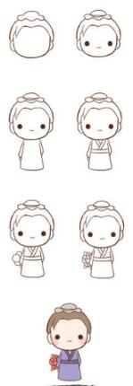

哆啦A梦，又名蓝胖子，这个一直默默陪伴大雄并且一直悉心帮助他的小东西很是讨人喜欢。很多人都想有个像蓝胖子一样万能的小可爱呢。

线条感十足的活力少女，一眼看去就让人过目难忘，总之就是很活泼可爱也很燃，扎起的马尾编发也具有时代的个性。年轻就是资本。

我们一路走来在教室经过了日日夜夜，上课无聊时我们是不是都会画一些可爱的小动物呢，简单又可爱还特别萌。
初高中时候的你有没有在老师转身之后偷偷传过纸条呢？在纸条上有没有花过这些可爱的表情呢？简单的小表情就能在纸条上让人联想到你的表情。快来看看有没有你的回忆吧！
有没有小可爱们像我一样看见软萌软萌的东西就会触碰到自己心里最柔软的地方，燃爆你的少女心！图片上的动物简直可爱到家，看上去大体相似的它们你仔细看却是不同的小动物哦~！~

这个Q版的小牛郎看上去是不是就没有那么悲惨了呢？~甚至还多了几分可爱有没有呢，其实，我看他还特别想最近播出的择天记里的男主陈长生哎，大概，古代的男子装扮都很相似吧！~！
有了可爱的牛郎怎么能少的了萌萌哒的织女呢？！~怎么都要让他们在一起的不是吗？古代那王母娘娘也太心狠了，怎么舍得让他们分开呢？~
这个图片虽然都很小啊，但是很具有中国风的呢~很有春节的味道哎，好吧，恭喜发财！那个。。。红包能不能拿来嘞~
你们有没有做手账的习惯呢？反正我有啦~手账呢就是即使很乱也很好看的一种存在，当然必不可少的就是花边啦！~拿图不谢~！
布朗熊，~是我最喜欢的一个卡通小玩意没有之一，对，没有之一。我表示我的电脑手机壁纸都是它啦！~很萌很可爱，我的少女心一发不可收拾~~嘻嘻，拿图留赞哦~时